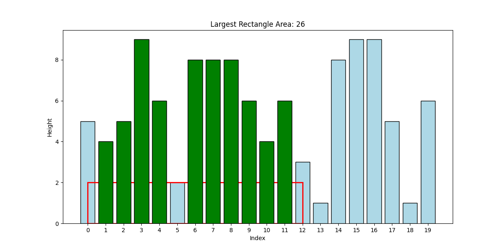
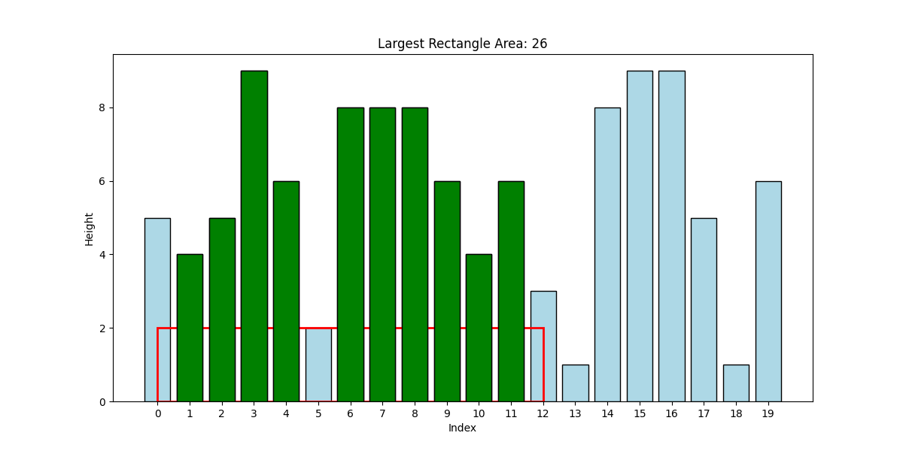

Problem 2.2 Large Spiked Rectangles
Spikeless rectangles provide a reasonable approximation for high black intensity regions, but they have some limitations. For example, since the area of the rectangle is computed using its sides, rectangles with small internal bars may be selected, resulting in regions of the image that have low black intensity in the interior.
A better approach is to consider all rectangles, including those that may (or may not) contain spikes. Moreover, we modify the definition of the height of a rectangle as below.
Figure 1 below shows two examples of largest rectangles with spikes and their corresponding areas. Please note that although these examples show rectangles that do contain spikes, if a spikeless rectangle with larger area exists, it will be chosen as the largest rectangle. We simply do not need to check for spikelessness in this problem.
 

Python code
Once again, our first task is to write a quadratic time algorithm to compute the largest rectangle (which may or may not contain spikes). We will inspect all possible rectangles and do not need to check for spikelessness. Simply be careful to use the height of the shortest bar as the height of the rectangle.
Implement the following Python function for this purpose:
Use the following main to test your function:
The linear time method
It is possible to compute the largest rectangle in linear time by making only two scans of the input list.
To understand the main insights used in this method, consider the following:
- Every rectangle (including the largest one) has its right boundary at one of the bars in the input. We can therefore think of rectangles in terms of their right sides.
- Specifically, we can compute the largest rectangle ending at each bar \(i\). Additionally, we will store the height of each of these largest rectangles ending at specific bars.
- The main insight is this: if we know the best rectangle ending at bar \(i - 1\) and the height of this rectangle, we can easily compute the largest rectangle ending at bar \(i\) and its height.
- Once we have computed the largest rectangles ending at all bars \(i\) and their corresponding heights, we can scan through them once and find the largest rectangle overall.
We will use two auxiliary lists to store rectangles and their heights.
We define:
- left_boundaries[i]: the index of the left boundary of the largest rectangle ending at bar \(i\)
- rect_height[i]: the height of the largest rectangle ending at bar \(i\)
Initially:
- left_boundaries[0] = 0
- rect_height[0] = count[0]
The specific problem for you to solve is the following:
Given the values of left_boundaries[i-1] and rect_height[i-1], how does one compute left_boundaries[i] and rect_height[i]? This will not require looping through the lists if done carefully.
Once the lists left_boundaries and rect_height have been fully populated, we can scan them once, compute areas of corresponding rectangles, and report the overall largest rectangle.
Following is a Python function stub containing some part of the code. Complete this implementation and use the same main as above to test your code. Please be careful to ensure linear running time.
Further improvement
Since we only need left_boundaries[i-1] and rect_height[i-1] for the computation of these values at \(i\), we do not need to store the lists but only two variables corresponding to the values of left_boundaries[i-1] and rect_height[i-1]. In this case, we will need to maintain max_left, max_right, and max_area as we compute the rectangles. This way, we will no longer require the extra scan through the lists at the end to find the largest rectangle.